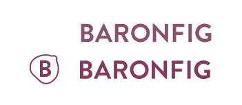
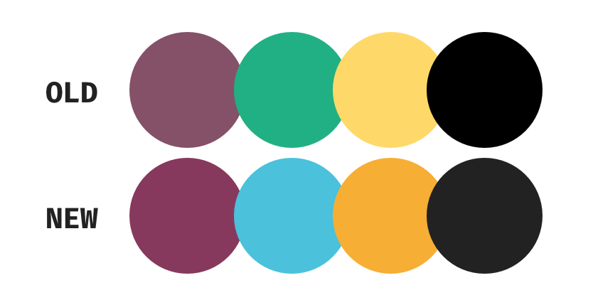
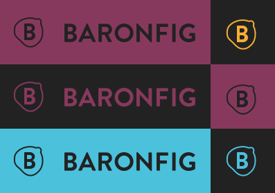

Baron Fig
 I wanted to start with the color first. I felt that the current maroon/fig/wine color was a little too muted. I started by increasing the saturation and using that base color to influence the other colors within the palette. I brought more color to the yellow to give it more of a gold look. Inspiration for these colors came from their notebook selection. For the black color, I wanted to make it less jarring and lighten in up a bit.
For their logo I wanted to create some sort of icon that related to either what they do or a logo based on their name. The final logo came out to be a B wrapped within a fig outline shape (mildy NSFW). Overall I think the logo came out how I envisioned it and would want to explore color variations on actual products such as notebooks or pens.
